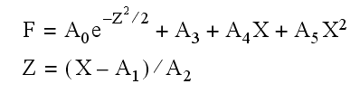

The FUNCT procedure evaluates the sum of a Gaussian and a 2nd-order polynomial and optionally returns the value of its partial derivatives. Normally, this function is used by CURVEFIT to fit the sum of a line and a varying background to actual data.
This routine is written in the IDL language. Its source code can be found in the file funct.pro in the lib subdirectory of the IDL distribution.
FUNCT, X , A , F [, Pder ]
A vector of values for the independent variable.
A vector of coefficients for the equations:

A named variable that will contain the value of the function at each Xi .
A named variable that will contain an array of the size (N_ELEMENTS( X ),6) that contains the partial derivatives. Pder(i,j) represents the derivative at the i th point with respect to j th parameter.
|
4.0 |
Introduced |